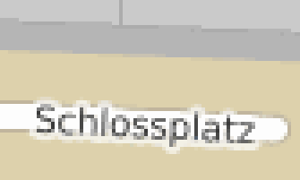
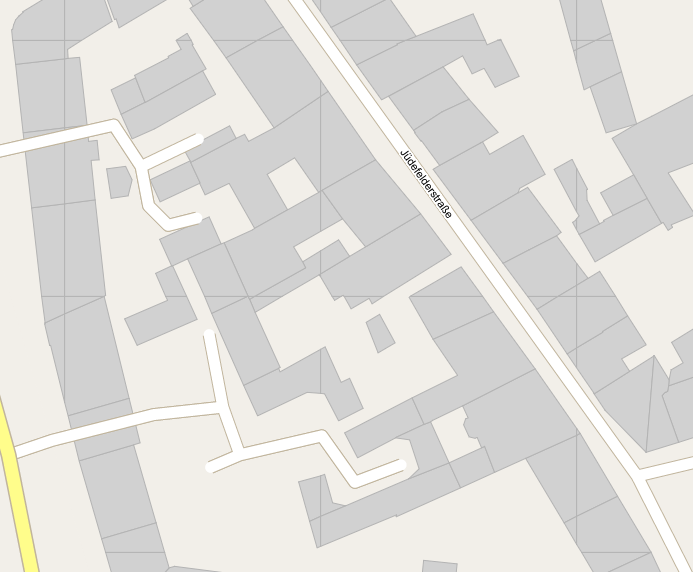
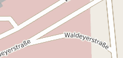
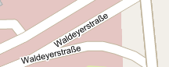

Vector Tiles
Performante Übertragung von umfangreichen Vektordaten
Johannes Weskamm
weskamm@terrestris.dehttp://github.com/weskamm
ows.terrestris.de
Über uns
- OpenSource GIS aus Bonn
- Projekte, Support, Schulung
- Beratung, Planung, Implementierung & Wartung
Vector Tiles - Generelles
- Teile des Bildausschnitts können während des Ladens angezeigt werden
- gefühlt schnelleres Ladeverhalten
- gesteigerte Performanz von Clients und JS-Bibliotheken
- auch für größere Datenmengen möglich
- Styling auf Clientseite
- einwandfreie Darstellung
- Objektinteraktion (Hover / Select)
- direktes Feedback, keine Requests
Gleiches Prinzip wie gekachelte WMS:
Vector Tiles - Beispiel-Setup
Serverseitige Komponenten
| Komponente | Beschreibung |
|---|---|
| PostgreSQL / PostGIS | räumliche Datenbank |
| OSM-Planetfile | globaler OpenStreetMap Datensatz |
| Imposm 3 | performanter Datenbankimport von OSM-Daten |
| TileStache | generiert Vector Tiles |
Vector Tiles - Beispiel-Setup
Clientseitige Komponenten
| Komponente | Beschreibung |
|---|---|
| OpenLayers 3 | Web Mapping Framework |
| Bootstrap | Frontend Design |
| Canvas fähiger Webbrowser | z.B. Chrome, Safari, Firefox, IE, ... |
Vector Tiles - Die Vorteile
- Darstellungsqualität (im Vergleich zu gecachten WMS)
- Keine Unschärfen
- Keine groben Auflösungen
- sauberes Schriftbild
- keine abgeschnittenen Beschriftungen / Symbole
- Transformation ohne Qualitätseinbußen
- gekachelte Datenübertragung -> Geometrien "können" destruktiv geclippt werden
- Beschriftungsüberlappungen (label collision) schwer zu vermeiden
- Beschriftungen nur schwer "krümmbar" über Canvas
- Canvas Implementation von OL3 ist "blocking"
- Browser und Clientperformance spielen wichtige Rolle
- MVT - Mapnik Vector Tiles (binär)
- Mapbox vector tile format - basiert auf Google Protocol Buffern
- Kothic JSON - GeoJSON ähnlich
- GeoJSON
- TopoJSON (schlankeres GeoJSON)
- ...
- Cache header und gzip Komprimierung
- "Clipping" je nach Anwendungsfall / Datensatz
- Generalisierung von Geometrien in Imposm / TileStache
- sinvolle Selektionen
- Methoden und Interactions mit Bedacht einsetzen
- ol.interaction.Select - "mouseMove" / "pointerMove" schränkt Performance ein
- sinnvolle Min- und Maxscales / Maßstäbe verwenden
- geometrische Überlappungen vermeiden
- unnötig aufwändige Stile wo möglich vermeiden
- ggf. "ratio" des Layersreduzieren, um Requests und Daten zu verringern
- verwenden des ol.layer.Image mit einer ol.source.ImageVector!
- enormer Performanceschub durch Skalierung, Translation und Rotation des Bildes während Animation / Interaktion statt ständigem Rendering
- Autor:
- Johannes Weskamm
terrestris GmbH & Co. KG
weskamm@terrestris.de
- Johannes Weskamm
- Lizenz: CC BY-SA 3.0
- Vortragsfolien

😝
Problemfelder
Problemfelder

aktiviertes "Clipping" an Kachelgrenzen
⇐
gekrümmte Beschriftungen?
⇓


Kachelformate
TopoJSON Beispiel
Request:
http://ows.terrestris.de/vectortiles/osm-roads/19/273219/173259.topojson
{ "objects": { "vectile": { "type": "GeometryCollection", "geometries": [ { "arcs": [ 0 ], "type": "LineString", "properties": { "z_order": 0, "type": "service", "name": "" }, "id": "1f71c1b583" }, { "arcs": [ 1 ], "type": "LineString", "properties": { "z_order": 0, "type": "service", "name": "" }, "id": "34c6bcd1fc" } ] } }, "type": "Topology", "transform": { "translate": [ 7.604598999023426, 51.96626938051444 ], "scale": [ 6.705522537396244e-7, 4.131422443251487e-7 ] }, "arcs": [ [ [ 1317, 311 ], [ -238, -83 ], [ -1035, -311 ], [ 88, -296 ], [ 888, 320 ], [ 59, 287 ] ], [ [ 765, 3417 ], [ -1201, -220 ], [ 441, -2243 ], [ 1124, 386 ] ] ] }
Performance Faktoren auf Serverseite - Tilestache und Imposm
{
"cache": {
"name": "Disk",
"path": "/tmp/stache",
"umask": "0000",
"gzip": ["txt", "text", "json", "xml", "topojson", "geojson", "mvt"]
},
"layers": {
"osm-roads": {
"allowed origin": "*",
"maximum cache age": 86400,
"provider": {
"class": "TileStache.Goodies.VecTiles:Provider",
"kwargs": {
"clip": false,
"simplify": 1,
"dbinfo": {
"host": "localhost",
"user": "user",
"password": "password",
"database": "imposm",
"port": "5432"
},
"srid": 3857,
"queries": [
null,null,null,null,null,null,null,null,
"SELECT type, z_order, name, geometry AS __geometry__ FROM osm_roads_gen0 WHERE type IN ('highway', 'trunk', 'motorway')-- 8",
"SELECT type, z_order, name, geometry AS __geometry__ FROM osm_roads_gen0 WHERE type IN ('highway', 'trunk', 'motorway')-- 9",
"SELECT type, z_order, name, geometry AS __geometry__ FROM osm_roads_gen0 WHERE type IN ('primary', 'highway', 'trunk', 'motorway', 'rail')-- 10",
"SELECT type, z_order, name, geometry AS __geometry__ FROM osm_roads_gen1 WHERE type IN ('primary', 'highway', 'trunk', 'motorway', 'rail')-- 11",
"SELECT type, z_order, name, geometry AS __geometry__ FROM osm_roads_gen1 WHERE type IN ('primary', 'secondary', 'tertiary', 'highway', 'trunk', 'motorway', 'rail')-- 12",
"SELECT type, z_order, name, geometry AS __geometry__ FROM osm_roads_gen1 WHERE type IN ('primary', 'secondary', 'tertiary', 'residential', 'highway', 'trunk', 'trunk_link', 'motorway', 'motorway_link', 'service', 'footway', 'track', 'living_street', 'unclassified', 'rail')-- 13",
"SELECT type, z_order, name, geometry AS __geometry__ FROM osm_roads WHERE type IN ('primary', 'secondary', 'tertiary', 'residential', 'highway', 'trunk', 'trunk_link', 'motorway', 'motorway_link', 'service', 'footway', 'track', 'living_street', 'unclassified', 'rail')-- 14",
"SELECT type, z_order, name, geometry AS __geometry__ FROM osm_roads WHERE type IN ('primary', 'secondary', 'tertiary', 'residential', 'highway', 'trunk', 'trunk_link', 'motorway', 'motorway_link', 'service', 'footway', 'track', 'living_street', 'unclassified', 'rail')-- 15",
"SELECT type, z_order, name, geometry AS __geometry__ FROM osm_roads WHERE type IN ('primary', 'secondary', 'tertiary', 'residential', 'highway', 'trunk', 'trunk_link', 'motorway', 'motorway_link', 'service', 'footway', 'track', 'living_street', 'unclassified', 'rail')-- 16",
"SELECT type, z_order, name, geometry AS __geometry__ FROM osm_roads WHERE type IN ('primary', 'secondary', 'tertiary', 'residential', 'highway', 'trunk', 'trunk_link', 'motorway', 'motorway_link', 'service', 'footway', 'track', 'living_street', 'unclassified', 'rail')-- 17"
]
}
}
}
}
}Performance Faktoren auf Clientseite - OL3
Wichtige Optionen auf Clientseite - OL3
ol.layer.Image -> ol.source.ImageVector -> ol.source.TileVector
this.roads = new ol.layer.Image({
name: 'roads',
source: new ol.source.ImageVector({
ratio: 1,
source: new ol.source.TileVector({
format: new ol.format.TopoJSON({
defaultProjection: 'EPSG:3857'
}),
projection: 'EPSG:3857',
tileGrid: new ol.tilegrid.XYZ({
minZoom: 0,
maxZoom: 19
}),
url: 'http://ows.terrestris.de/vectortiles/osm-roads/{z}/{x}/{y}.topojson'
}),
style: function(feature, resolution) {...}
})
});Was ist besser?
Egal ob ein Dienst Raster- oder Vektordaten gekachelt ausliefert, beide Varianten haben ihre Vor- und Nachteile| Anforderung | Art der Kacheln |
|---|---|
| aufwändig gestaltete oder sehr komplexe Geometrien | Raster |
| spezielle Beschriftungen (Kollisionsvermeidung, Krümmungen, ...) | Raster |
| interaktive Objekte in der Karte (Hover / Select) | Vektor |
| hohe Ansprüche an die Darstellungsqualität von Geometrien | Vektor |
| Vermeiden / Reduzieren von Caching auf der Serverseite | Vektor |
Live-Demo